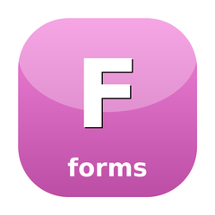

Demos.
VHS-recorded GIFs of every example shipped with the library. Regenerated automatically on every push that touches the source.


Foundation lib for form and input primitives
Foundation lib for form and input primitives — the raw component implementations that sugar-bits and sugar-prompt re-export. Extracted out of those two leaf libs so the form/prompt engine can ship as a single standalone dependency.
composer require sugarcraft/candy-formsuse SugarCraft\Forms\Field\Input;
use SugarCraft\Forms\Form;
use SugarCraft\Forms\Validator\Required;
$form = Form::new(
Input::new('name')
->withTitle('What is your name?')
->withValidator(new Required())
);
echo $form->view();| Class | Method | Description |
|---|---|---|
| Form | new(Field[]) | Create a new form with fields |
| Field\Input | new(string) | Create a text input field |
| Field\Confirm | new(string) | Create a confirmation field |
| Field\Select | new(string, Options) | Create a select field |
| Validator\Required | validate(mixed) | Check value is not empty |
| Validator\Email | validate(mixed) | Check valid email format |
| Spinner\Spinner | new(Style) | Create a spinner with style |
VHS-recorded GIFs of every example shipped with the library. Regenerated automatically on every push that touches the source.